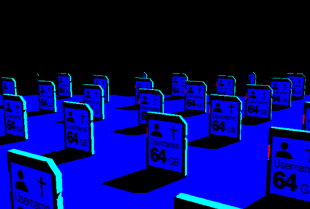
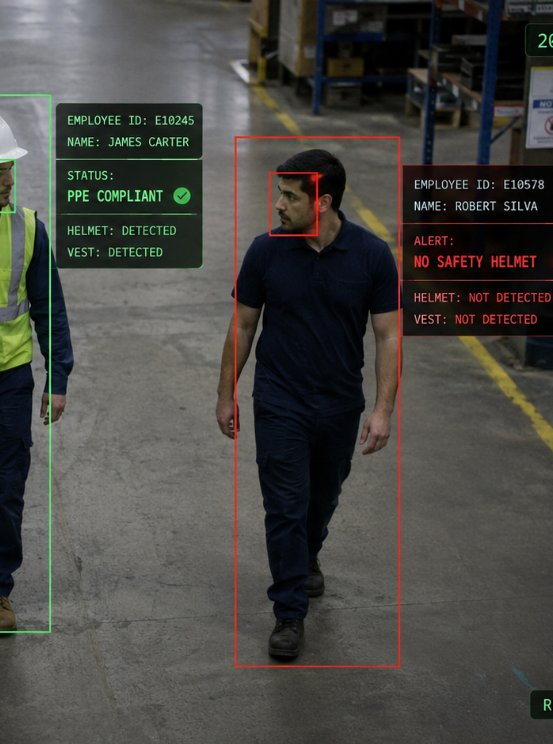
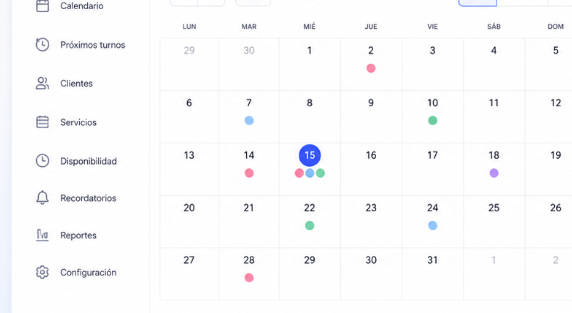
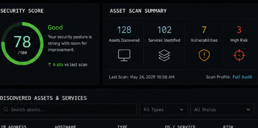
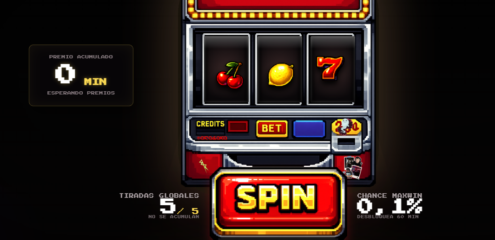

Like heroes in the rainThe moon is always spying on your fearsTo Tokio network stocks, I streamAll of my wasted dreams on the screenJust keep runningi gently open the door...There is nothing in this world that is not in the process of becoming something else.Never stop fight
if (project.has("me")) {return project.success();}_

Hora local - --:--:--
Cybersec enjoyer
Disfruto experimentando con la ciberseguridad, me gusta armar protecciones y a su vez vulnerarlas con la finalidad de mejorarlas constantemente.
Web developer
Una web es una forma dinámica de conectar con los usuarios, me gusta crear páginas web con diseños interesantes.
Rev eng
No hay nada mejor que entender cómo funcionan las cosas, por eso mismo diría que me apasiona la ingeniería inversa: desmontar pieza por pieza, o código por código, es una de mis actividades favoritas.
Random software dev
Creo software random y normalmente inútil.
Indie gamedev
Hago jueguitos.
Community creator
De vez en cuando me gusta crear comunidades, ya sea de juegos, servidores o cosas aleatorias. Es normal que después termine ghosteando a mi propia comunidad, pero las risas no faltan.
Plxgio
{ }
@plxgio
Desarrollo principal orientado a web, aplicaciones, software y herramientas que resuelven problemas concretos.
De este lado soy lo que soy fuera del profesionalismo, casi diría que mi lado más real.
Plxgio @plxgio
Proyectos
Software y herramientas en las que estoy trabajando en la actualidad, algunas pueden ser puramente por aprendizaje, otras buscan ser una solución viable para los usuarios.

CamsecX
{ }
Plataforma de seguridad adaptable a distintos sistemas de vigilancia. Analiza video en tiempo real para reconocer patrones y emitir alertas ante falta de equipamiento, situaciones de riesgo u objetos y herramientas fuera de lugar.
Monitoreo nocturno y detección de movimiento fuera del horario operativo.
Sistema cerrado de alertas y notificaciones configurables.
Integración con bases de datos para contextualizar al personal presente en cada captura.

TurneroX
{ }
Sistema gratuito de gestión de turnos para negocios y emprendimientos, pensado para una instalación directa y una operación sencilla entre el comercio y sus clientes, sin pagos recurrentes ni intermediarios.
Configuración rápida y flujo de reserva simplificado.
Integración opcional con WhatsApp y Google Calendar.
Calendario propio con recordatorios y seguimiento de turnos.

BumBum Tool
{ }+
Herramienta de evaluación de seguridad para servidores y sistemas cerrados, orientada exclusivamente a entornos autorizados y pruebas controladas de resistencia, exposición de información y robustez de credenciales.
Pruebas de estrés y análisis de respuesta del sistema.
Búsqueda de posibles filtraciones y datos expuestos.
Evaluaciones controladas de cracking simple e intermedio.
Varios más en la galera...
Otros proyectos, experimentos y herramientas se incorporarán a medida que estén listos para mostrarse.
Plxgio @plxgio
Servicios
Soluciones de desarrollo, seguridad e infraestructura adaptadas al alcance real de cada proyecto.
service://full-stack
Desarrollo web full stack
Diseño y desarrollo de sitios, paneles y aplicaciones web completas: interfaz, APIs, bases de datos, despliegue y mantenimiento, con foco en rendimiento, seguridad y una experiencia clara.
service://private-build
Software personalizado y privado
Aplicaciones construidas alrededor del flujo real del cliente, con entrega privada, control del código y posibilidad de ejecución local o dentro de infraestructura cerrada.
Herramientas de monitoreo, control de acceso, alertas y análisis diseñadas para reducir riesgos y reforzar sistemas existentes sin sumar complejidad innecesaria.
service://cryptography
Cifrado y descifrado de datos
Implementación de flujos seguros para proteger archivos, mensajes y bases de datos, incluyendo migración, recuperación autorizada e integración con software ya operativo.
service://trace
Trackeo digital
Trazabilidad autorizada de activos, eventos y actividad dentro de sistemas propios mediante registros, métricas y paneles de auditoría que permitan reconstruir cada operación.
service://protection
Protección digital
Diagnóstico y refuerzo de cuentas, equipos y servicios mediante permisos, copias de seguridad, endurecimiento de configuración y reducción de superficie de ataque.
service://network
Gestión de redes
Configuración, segmentación y monitoreo de redes para mantener conectividad, visibilidad y estabilidad, con documentación útil para su operación y mantenimiento.
Plxgio @plxgio
Herramientas & stack
Lenguajes, frameworks y plataformas que utilizo para construir, mantener y desplegar proyectos.
Lenguajes
C#
Python
JavaScript
TypeScript
HTML
CSS
Java
C++
Rust
Frameworks y librerías
React
Node.js
Express
Vue.js
Herramientas
Git
Docker
Visual Studio
VS Code
Trello
Apache
Apache Maven
Cloud y proveedores
AWS
MySQL
GitHub
GitHub Pages
Cloudflare
Firebase
Plxgio @plxgio
Learning
No estoy aprendiendo nada actualmente, simplemente mejorando mis conocimientos en mis
.
Plxgio @plxgio
Proyectos
Software random, experimentos y jueguitos que construyo por curiosidad, diversión o porque la idea apareció de la nada.

NotBrainrot Jackpot
Extensión para navegador que bloquea TikTok, X, Reddit, Instagram y Shorts durante los periodos de trabajo o estudio. El único escape es una máquina tragamonedas con cinco intentos por hora.
Bloqueo programado de plataformas que interrumpen la concentración.
Cada premio desbloquea una cantidad limitada de minutos de acceso.
También se puede perder todo y seguir trabajando, como corresponde.
MangaEnjoyer
Proyecto para construir una biblioteca de acceso libre a mangas aportados por usuarios. Busca funcionar como alternativa a TMO y preservar obras cuyas traducciones ya desaparecieron o podrían desaparecer.
Biblioteca comunitaria y de acceso abierto.
Aportes organizados por los propios usuarios.
Preservación de mangas y traducciones difíciles de encontrar.
Revolite
Roguelite progresivo centrado en evolucionar de manera constante y sin un límite definido, acumulando poder hasta consumir la totalidad de la existencia.
Progresión continua entre partidas.
Evoluciones y combinaciones acumulativas.
Escala diseñada para crecer hasta niveles absurdos.
Please, Just Drive
Juego de terror sobre seguir manejando a través de escenarios inquietantes y obstáculos impredecibles. El objetivo es llegar a destino junto a tu compañera.
Conducción bajo presión y visibilidad limitada.
Escenarios de terror que cambian durante el trayecto.
Una meta sencilla: no detenerse y llegar juntos.
Y varios más en la galera.
Más juegos, extensiones y experimentos irán apareciendo cuando estén listos para salir del cajón.
Plxgio @plxgio
Servicios
Cosas que puedo construir cuando el proyecto pide un enfoque más creativo, experimental o directamente hecho a medida.
hobbie://software
Creación de software
Desarrollo de utilidades, aplicaciones y herramientas personalizadas para ideas poco convencionales, prototipos o necesidades concretas.
hobbie://assets
Creación de assets
Producción de recursos 2D y 3D, interfaces, sprites y elementos visuales pensados para videojuegos, servidores o proyectos digitales.
hobbie://minecraft-server
Desarrollo de servidores de Minecraft
Diseño de servidores completos, configuración de infraestructura, mecánicas propias, plugins, mods, permisos y optimización para comunidades de distintos tamaños.
hobbie://launcher
Desarrollo de launchers personalizados
Launchers con identidad propia, actualización automática, gestión de versiones, modpacks y acceso directo a servidores o experiencias específicas.
hobbie://gamedev
Desarrollo de videojuegos
Creación de prototipos y juegos independientes, desde sistemas de gameplay y herramientas internas hasta integración de assets y optimización.
Plxgio @plxgio
Herramientas & stack
Motores, lenguajes visuales y herramientas creativas que utilizo para experimentar con juegos, gráficos y assets.
Lenguajes creativos
GDScript
GLSL
Motores y visuales
Unity
Godot
Three.js
Producción de assets
Blender
Aseprite
Mods, plugins y servidores
Java
Kotlin
Gradle
Maven
IntelliJ IDEA
Paper
Spigot
Fabric
Forge
Plxgio @plxgio
Learning
Objetivo actual: entender y construir las piezas necesarias para desarrollar un motor gráfico propio.
Motor gráfico propio
Ruta experimental desde una ventana vacía hasta un renderer con escenas, assets y herramientas de diagnóstico.
01
Fundaciones
Memoria, estructuras, vectores, matrices y una arquitectura mínima que pueda crecer sin romperse.
C++ / RustCMakeMath
02
Ventana e input
Creación de la ventana, ciclo principal, teclado, mouse, tiempo y eventos del sistema.
SDLGLFWGame loop
03
Renderer
Pipeline de dibujo, buffers, cámaras y primeras geometrías renderizadas en tiempo real.
OpenGLVulkanBuffers
04
Shaders y materiales
Iluminación, texturas, materiales y efectos programados directamente sobre la GPU.
GLSLPBRGPU
05
Escenas y assets
Carga de modelos, texturas, jerarquías, entidades y organización de una escena completa.
ECSMeshesAsset pipeline
06
Optimización y tooling
Profiling, depuración visual y herramientas propias para inspeccionar el motor mientras funciona.